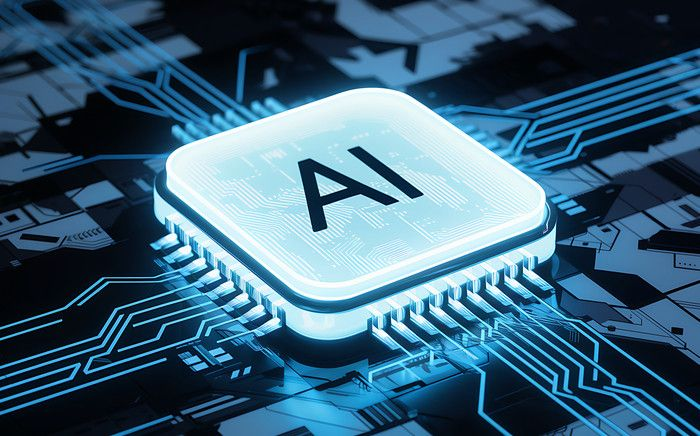
NEWS - NOV 11, 2020
AI Chip

UPDATE - NOV 12, 2020
Computer Networks and Smart City
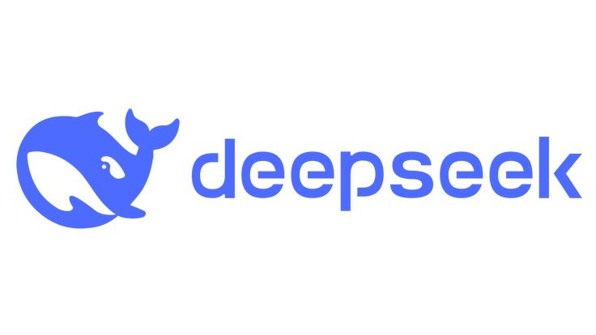
TECH - NOV 13, 2020
DeepSeek
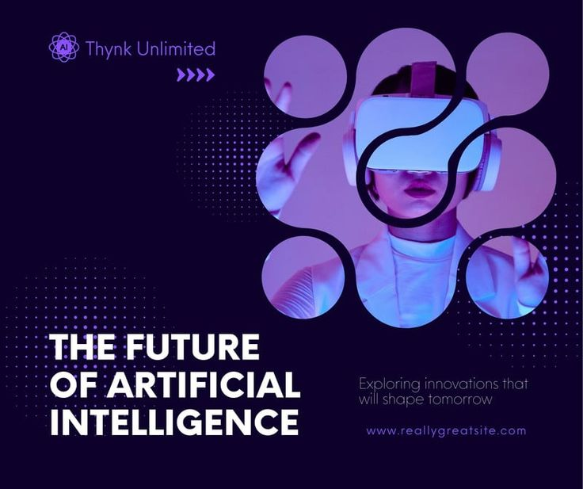
UPDATE - NOV 12, 2020
Future of AI

UPDATE - NOV 12, 2020
Google Gemini Launch
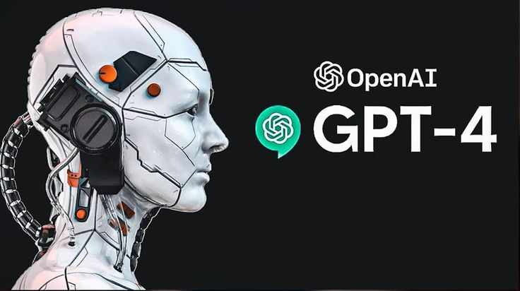
UPDATE - NOV 12, 2020
OpenAI GPT-4
UPDATE - NOV 12, 2020
Intel

UPDATE - NOV 12, 2020
ChatGPT vs DeepSeek Comparison

UPDATE - NOV 12, 2020
Machine Learning Illustration

UPDATE - NOV 12, 2020
Multi-Cloud Computing

UPDATE - NOV 12, 2020
Quick Start with React

UPDATE - NOV 12, 2020
Python Programming
TECH - MAY 10, 2025
Android: Powering the Mobile Revolution
Android has become synonymous with mobile technology. As an open-source operating system, it powers billions of smartphones, tablets, and smart devices around the globe. Its flexibility and massive developer ecosystem make it a leading force in driving mobile innovation, app development, and IoT connectivity.
Read More
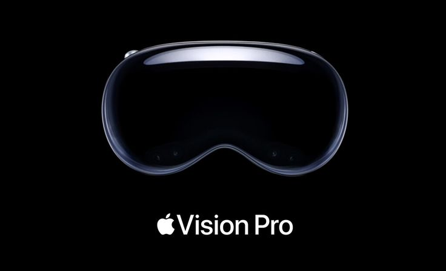
DESIGN - MAY 08, 2025
Apple Vision Pro: A Leap into Spatial Computing
Apple’s Vision Pro is redefining the way we interact with digital content. By merging augmented reality with high-performance computing, it ushers in a new era of spatial computing. From immersive experiences to advanced productivity tools, the Vision Pro showcases how hardware and AI can revolutionize personal computing.
Read More
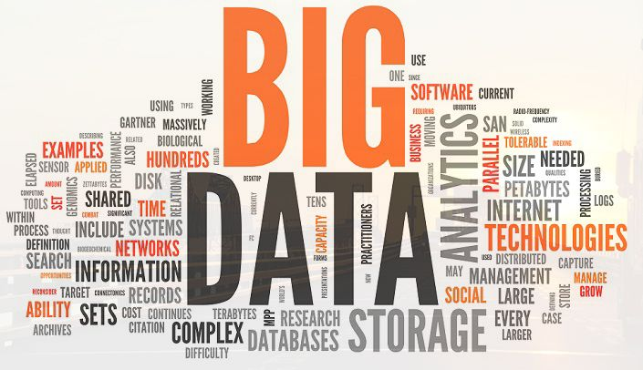
BUSINESS - MAY 05, 2025
Big Data: The New Oil
Big Data is at the core of decision-making in the digital age. By collecting, analyzing, and interpreting vast datasets, organizations can uncover patterns and make smarter business choices. Big Data powers everything from personalized recommendations to complex financial models.
Read More
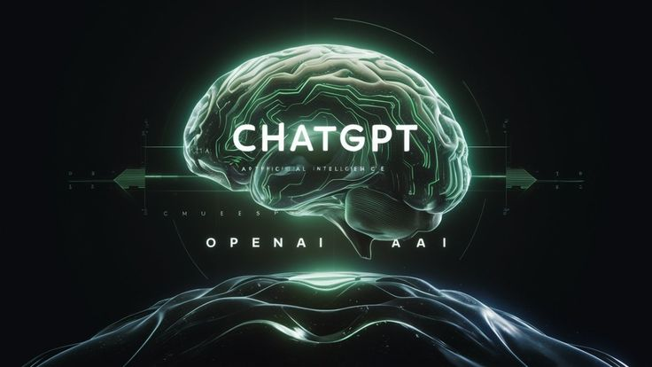
WORK - MAY 03, 2025
ChatGPT & AI: The Future of Intelligence
AI tools like ChatGPT are transforming how we work, learn, and communicate. From generating content to assisting in research and automating support, AI is not just a trend — it's becoming a vital co-pilot across industries. Its potential for creativity and efficiency is just beginning to unfold.
Read More

TECH - MAY 10, 2025
Cybersecurity: The Digital Shield
With cyber threats growing in complexity, cybersecurity has never been more critical. Whether it's protecting user data or securing national infrastructure, robust defense systems are essential. Innovations in AI-driven threat detection and quantum-resistant encryption are shaping the future of digital safety.
Read More
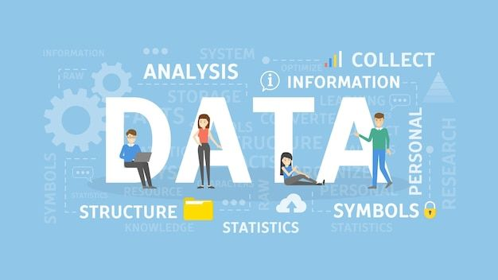
TECH - MAY 10, 2025
Data Analysis & Science: The Brains Behind Insights
Data science and analysis turn raw data into actionable insights. These fields combine statistics, machine learning, and programming to drive business intelligence and automation. From healthcare predictions to market trends, data scientists are solving some of the world’s toughest problems.
Read More

TECH - MAY 10, 2025
Front-End Development: Creating Seamless Experiences
Front-end development blends creativity with code to create intuitive user interfaces. With frameworks like React, developers build responsive and dynamic web apps that power today’s digital platforms. It’s where design meets functionality.
Read More

TECH - MAY 10, 2025
Full-Stack Development: Building It All
Full-stack developers bring web applications to life from front to back. They work on everything — databases, servers, APIs, and UIs — to deliver complete, functional products. As digital demand grows, these all-rounders are in high demand across tech industries.
Read More
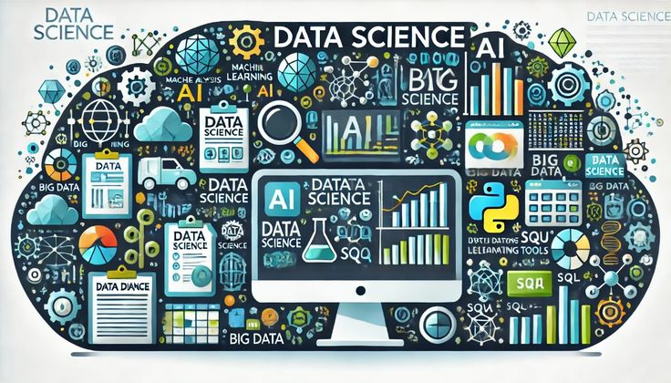
TECH - MAY 10, 2025
Data Science: The Fuel of the Digital Age
In today's hyper-connected world, data is everywhere—from your smartphone's GPS location to the posts you like on social media. But raw data is just the beginning. What turns it into value is Data Science—the powerful blend of mathematics, statistics, and computer science used to extract meaning, solve problems, and forecast the future.
Read More
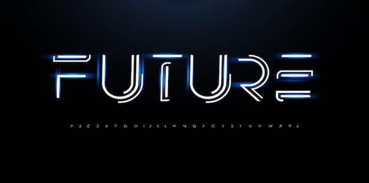
TECH - MAY 10, 2025
The Future of Technology: Shaping the Digital Tomorrow
In an era where digital innovations evolve at lightning speed, the future of technology is more exciting—and unpredictable—than ever. From immersive virtual worlds built by Meta to the expanding universe of mobile apps and the essential role of web developers, the tech landscape is transforming how we live, work, and connect.
The Future of Technology: What Lies Ahead?
The next decade will be defined by intelligent, immersive, and interconnected technologies. Here's a glimpse of what's on the horizon:
Artificial Intelligence (AI) Everywhere: AI will move from being a feature to the foundation of modern tech—automating tasks, enhancing personalization, and transforming industries.
Quantum Computing: Still in its early stages, quantum computers could solve problems in seconds that would take today's supercomputers years.
5G and Beyond: Faster, more stable connections will power real-time data sharing, enabling autonomous vehicles, smart cities, and ultra-responsive apps.
Green Tech: Eco-friendly innovations like energy-efficient chips, sustainable batteries, and carbon-neutral data centers will be crucial.
Tech for Humanity: Innovations in biotech, assistive technology, and AI-driven healthcare will focus on improving quality of life.
Read More
The Future of Technology: What Lies Ahead?
The next decade will be defined by intelligent, immersive, and interconnected technologies. Here's a glimpse of what's on the horizon:
Artificial Intelligence (AI) Everywhere: AI will move from being a feature to the foundation of modern tech—automating tasks, enhancing personalization, and transforming industries.
Quantum Computing: Still in its early stages, quantum computers could solve problems in seconds that would take today's supercomputers years.
5G and Beyond: Faster, more stable connections will power real-time data sharing, enabling autonomous vehicles, smart cities, and ultra-responsive apps.
Green Tech: Eco-friendly innovations like energy-efficient chips, sustainable batteries, and carbon-neutral data centers will be crucial.
Tech for Humanity: Innovations in biotech, assistive technology, and AI-driven healthcare will focus on improving quality of life.
TECH - MAY 10, 2025
Meta and the Rise of the Metaverse
Meta, formerly Facebook, is betting big on the Metaverse—a persistent, shared virtual space that blends digital and physical reality. Think of it as the internet brought to life: 3D avatars, virtual meetings, digital real estate, and more.
Here’s how Meta is shaping the future:
Virtual Reality (VR): Through devices like the Meta Quest, people can socialize, work, or game in virtual environments.
Augmented Reality (AR): AR overlays digital content on the real world, helping in education, retail, and remote work.
Creator Economy: The metaverse will empower digital creators to build and sell virtual goods and experiences.
Whether Meta’s vision becomes reality or not, the shift toward immersive, spatial computing is well underway.
Read More
Here’s how Meta is shaping the future:
Virtual Reality (VR): Through devices like the Meta Quest, people can socialize, work, or game in virtual environments.
Augmented Reality (AR): AR overlays digital content on the real world, helping in education, retail, and remote work.
Creator Economy: The metaverse will empower digital creators to build and sell virtual goods and experiences.
Whether Meta’s vision becomes reality or not, the shift toward immersive, spatial computing is well underway.
TECH - MAY 10, 2025
Mobile App Development: The Power in Your Pocket
Mobile apps are the frontlines of digital interaction. With over 6.5 billion smartphone users globally, mobile app development continues to thrive, focusing on:
Cross-Platform Tools: Frameworks like Flutter and React Native allow developers to build apps for iOS and Android with a single codebase.
AI Integration: Apps now leverage AI for voice assistants, image recognition, chatbots, and personalized content.
IoT Connectivity: Apps increasingly interact with smart devices—from watches to refrigerators to vehicles.
Security & Privacy: As data privacy concerns grow, secure-by-design app development is becoming a must.
In the future, mobile apps won’t just live on phones—they’ll be integral to wearables, AR glasses, and embedded systems in everyday objects.
Read More
Cross-Platform Tools: Frameworks like Flutter and React Native allow developers to build apps for iOS and Android with a single codebase.
AI Integration: Apps now leverage AI for voice assistants, image recognition, chatbots, and personalized content.
IoT Connectivity: Apps increasingly interact with smart devices—from watches to refrigerators to vehicles.
Security & Privacy: As data privacy concerns grow, secure-by-design app development is becoming a must.
In the future, mobile apps won’t just live on phones—they’ll be integral to wearables, AR glasses, and embedded systems in everyday objects.
TECH - MAY 10, 2025
Tech of the Future: What’s Coming Next?
Some emerging technologies that will shape our world in the 2030s:
Brain-Computer Interfaces (BCI): Companies like Neuralink are exploring ways to connect human brains directly to computers.
Holographic Displays: 3D interfaces without screens could become the next wave of visual interaction.
Decentralized Internet (Web3): A web owned by users, not corporations, powered by blockchain and crypto principles.
Edge Computing: Instead of relying on the cloud, data will be processed closer to where it's generated—improving speed and privacy.
Innovation will continue to blur the line between digital and real, creating possibilities limited only by our imagination.
Read More
Brain-Computer Interfaces (BCI): Companies like Neuralink are exploring ways to connect human brains directly to computers.
Holographic Displays: 3D interfaces without screens could become the next wave of visual interaction.
Decentralized Internet (Web3): A web owned by users, not corporations, powered by blockchain and crypto principles.
Edge Computing: Instead of relying on the cloud, data will be processed closer to where it's generated—improving speed and privacy.
Innovation will continue to blur the line between digital and real, creating possibilities limited only by our imagination.
_.jpg)
TECH - MAY 10, 2025
What Does a Web Developer Do?
Amid all these advancements, web developers remain essential builders of the digital world. Their role includes:
Designing & Building Websites: From simple blogs to complex e-commerce platforms.
Writing Code: Using languages like HTML, CSS, JavaScript, and frameworks such as React or Angular.
Backend Development: Managing databases, servers, and APIs to ensure functionality and security.
Responsive Design: Ensuring websites look and work well on all screen sizes.
Performance Optimization: Improving load times and overall user experience.
Web developers also adapt to trends like:
Progressive Web Apps (PWAs)—apps that work offline and feel like native mobile apps.
Accessibility: Ensuring websites are usable for people with disabilities.
Web3 & Blockchain: Creating decentralized applications and smart contracts.
In short, web developers are digital architects, and as the web evolves, their roles will become even more critical.
Read More
Designing & Building Websites: From simple blogs to complex e-commerce platforms.
Writing Code: Using languages like HTML, CSS, JavaScript, and frameworks such as React or Angular.
Backend Development: Managing databases, servers, and APIs to ensure functionality and security.
Responsive Design: Ensuring websites look and work well on all screen sizes.
Performance Optimization: Improving load times and overall user experience.
Web developers also adapt to trends like:
Progressive Web Apps (PWAs)—apps that work offline and feel like native mobile apps.
Accessibility: Ensuring websites are usable for people with disabilities.
Web3 & Blockchain: Creating decentralized applications and smart contracts.
In short, web developers are digital architects, and as the web evolves, their roles will become even more critical.
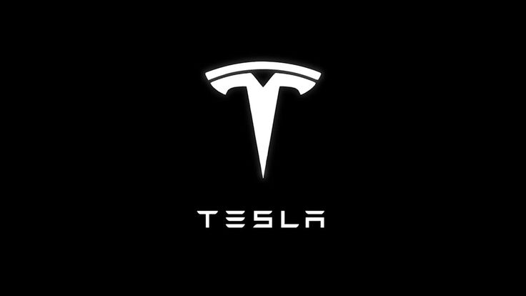
TECH - MAY 10, 2025
Tesla – Driving the Future of Sustainable Innovation
The Road Ahead Is Electric—and It’s Already Here
In a world shifting rapidly toward sustainability and automation, Tesla stands at the intersection of clean energy and smart technology. Founded in 2003, Tesla is not just an automaker—it’s a global force pushing the boundaries of electric vehicles (EVs), energy storage, and artificial intelligence.
Read More
TECH - MAY 10, 2025
Starlink – Connecting the Planet at the Speed of Light
The New Age of Global Internet Is in Orbit
Imagine high-speed internet access in the heart of the Amazon rainforest, on remote Himalayan peaks, or in disaster-hit zones with no ground infrastructure. That’s not science fiction—it’s Starlink, the revolutionary satellite internet project by SpaceX.
Read More